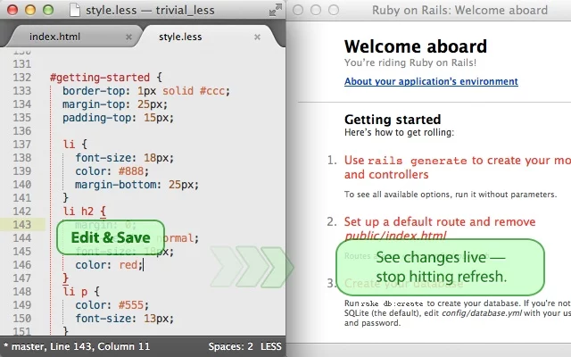
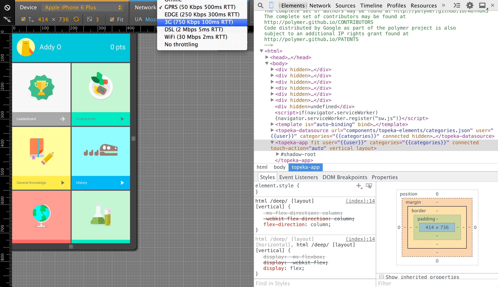

You can build the web with these tools
Per sopravvivere dobbiamo conoscere i nostri strumenti
e cominciare ad amarli
frontend tools
Browser + devtools |
Editor di testo |
Terminale |
Browser
Livereload
Estensione per chrome/firefox che aggiorna il browser ogni volta che si modifica un file
Devtools
Breakpoints / Devices
Devtools
audits
sublime text
Shortcuts
- ⌘ + ⇧ + p Console di comando (installa pacchetti, reindenta codice, lancia la compilazione)
- ⇧ + p vai al file (cerca mentre scrivi)
- ⌘ + d seleziona l'occorrenza successiva (multicursore)
- ⌥ + ⇧ + a seleziona il testo tra un tag
- ⌥ + ⇧ + w racchiude la selezione in un tag
sublime text
Gutter Color
sublime text
Emmett
div.row>.small-12.columns>p>a.button
<div class="row">
<div class="small-12 columns">
<p><a href="" class="button"></a></p>
</div>
</div>
sublime text
SublimeLinter
Trovare un punto e virgola mancante non dovrebbe essere un'operazione di 45 minuti.
Inoltre, un buon linter può insegnarvi una cosa o due su come strutturare i vostri file ;)
terminale
Alcuni pensano di poter sviluppare per il web senza mai avere a che fare con un terminale.
si sbagliano.
perché mio alleato è la Shell, ed un potente alleato essa è!
una shell permette di essere più veloci
Inoltre, i comandi all'interno di una shell si possono automatizzare
Alias!
alias myip='dig +short myip.opendns.com @resolver1.opendns.com'
alias server='gnome-terminal --window-with-profile=serverprofile -x bash -c "ssh user@server";'
alias rd='rmdir'
Bash-it / Oh-my-zsh
marco@hoth 07:15:28 ~/vagrant-local |local-dev ✓| →
Aggiungono alias, autocompletamento e plugin per applicazioni e linguaggi
Git Vagrant Docker ssh nginx
(chi usa windows deve accontentarsi di cmder)
Oh my git!
Quando trova un repository git cambia il prompt per darci informazioni utili
Terminale
.dotfiles
Possiamo salvare i nostri files di configurazione su un repository git per trovarci a casa ovunque andiamo
Cosa dicevi sull'automatizzare?
Automatizzare è far fare alla macchina le cose noiose per concentrarsi sulle cose importanti.
Se non stai automatizzando le cose noiose stai facendo troppa fatica.
- Frameworks
- Templates
- Libraries
- Watch
- Compile
- Lint
- Minify
- Optimize
- Build
- Deploy

yeoman |

bower |
 
grunt/gulp |
Alla base ci sono npm e git
(npm è il gestore di pacchetti di nodejs)
come gem/bundle per ruby
package.json
{
"name": "app",
"version": "0.1.11",
"repository": {
"type": "git",
"url": "https://github.com/user/app"
},
"dependencies": {},
"devDependencies": {
"browser-sync": "^1.5.1",
"del": "^0.1.3",
"gulp": "^3.8.8",
"gulp-autoprefixer": "^1.0.1",
"gulp-concat": "^2.4.1",
"gulp-jshint": "^1.8.4",
"gulp-load-plugins": "^0.6.0",
"gulp-sass": "^1.0.0",
"gulp-uglify": "^1.0.1",
"gulp-watch": "^1.0.7",
},
"engines": {
"node": ">=0.8.0"
}
}
Yeoman
Yeoman aiuta a inizializzare il tuo progetto (Scaffolding)
Yeoman
# npm install -g yo generator-gulp-angular
$ yo gulp-angular
boom! abbiamo il nostro progetto in angularJS già pronto
boom! abbiamo il nostro progetto in angularJS già pronto
gestione delle librerie old school
- 1. Quella libreria è vecchia di 6 mesi? meglio aggiornare!
- 2. Vai sul sito
- 3. Scarica al libreria
- 4. Estrai e copia da ~/Downloads
- 5. Incolla nella directory della tua applicazione
- 6. Aggiorna i tag degli script
bower
# npm install -g bower
$ bower install angular --save
$ bower update
Grunt
grunt ti aiuta ad automatizzare i task ripetitivi
Grunt
- Linting
- Compiling
- Minification
- Testing
- Conversion
- Documentation
- Deployment
- & more
Grunt
# npm install -g grunt-cli
$ npm install
$ grunt
Grunt
Gruntfile.js
module.exports = function(grunt){
grunt.initConfig({
uglify: {
build: {
src: 'app.js',
dest: 'build/app.min.js'}
},
jshint: { all: ['**/*.js']}
});
grunt.loadNpmTasks('grunt-contrib-uglify');
grunt.loadNpmTasks('grunt-contrib-jshint');
grunt.registerTask('default', ['jshint', 'uglify']);
};
Grunt
4,285 plugins and counting
http://gruntjs.com/plugins
Gulp
Gulp è più recente e fa le stesse cose di Grunt, ma con un altro approccio
(Code over configuration)
spoiler: è più veloce
Gulp
1,207 plugins and counting
http://gulpjs.com/plugins
quasi tutti i nuovi progetti hanno sostituito grunt con gulp
$ yo angular
$ bower update
$ gulp
Enough?
Demo
WordMove
Thank You!
https://github.com/radel
slides, demo, dotfiles
{{$storage.currentSlide}}/{{lastSlide}}